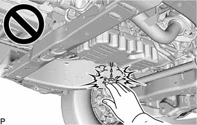

| Last Modified: 10-07-2025 | 6.11:8.1.0 | Doc ID: RM100000002HBQ6 |
| Model Year Start: 2024 | Model: Tacoma | Prod Date Range: [12/2023 - ] |
| Title: MAINTENANCE: AL80F AUTOMATIC TRANSMISSION FLUID: REPLACEMENT; 2024 - 2026 MY Tacoma [12/2023 - ] | ||
REPLACEMENT
CAUTION / NOTICE / HINT
The necessary procedures (adjustment, initialization or registration) that must be performed after replacing the automatic transmission fluid are shown below.
Necessary Procedures After Parts Removed/Installed/Replaced
|
Replacement Part or Procedure |
Necessary Procedure |
Effect/Inoperative Function when Necessary Procedures are not Performed |
Link |
|---|---|---|---|
|
Automatic transmission fluid HINT:
|
ATF Thermal Degradation Estimate Reset |
The value of the Data List item "ATF Thermal Degradation Estimate" is not estimated correctly. |
|
CAUTION:
- Be careful not to burn yourself when the automatic transmission fluid temperature is high. 
- To prevent burns, do not touch the engine,
exhaust pipe or other high temperature components
while the engine is hot.

PROCEDURE
PROCEDURE
1. REMOVE NO. 2 ENGINE UNDER COVER ASSEMBLY (w/ Transfer Skid Plate)
Click here
![2024 - 2026 MY Tacoma [12/2023 - ]; AL80F (AUTOMATIC TRANSMISSION / TRANSAXLE): AUTOMATIC TRANSMISSION ASSEMBLY: REMOVAL+](../../../../stylegraphics/info.gif)
2. BEFORE FILLING TRANSMISSION
Click here
3. REPLACE AUTOMATIC TRANSMISSION FLUID
(a) Lift the vehicle. [#1]
NOTICE:
The automatic transmission fluid level cannot be measured accurately if the vehicle is not level. Make sure it is held level.
|
(b) Using a 6 mm hexagon socket wrench, remove the overflow plug and gasket from the automatic transmission assembly and drain the automatic transmission fluid. [#2] |
|
|
(c) Using a 6 mm hexagon socket wrench, remove the No. 1 transmission oil filler tube from the automatic transmission assembly and drain the automatic transmission fluid. [#3] |
|
(d) Using a 6 mm hexagon socket wrench, temporarily install the No. 1 transmission oil filler tube to the automatic transmission assembly. [#4]
Torque:
1.7 N·m {17 kgf·cm, 15 in·lbf}
|
(e) Remove the refill plug and gasket from the automatic transmission assembly. [#5] CAUTION: Make sure not to touch the high temperature parts such as the exhaust pipe, etc. |
|
|
(f) Add automatic transmission fluid to the refill hole until it flows out of the overflow hole. [#6] NOTICE:
HINT: When pouring automatic transmission fluid into the refill hole, cover the area surrounding the refill hole with a cloth. If automatic transmission fluid adheres to the automatic transmission oil pan sub-assembly, it may be mistaken for an automatic transmission fluid leak. |
|
|
(g) Wait until the automatic transmission fluid flow slows and only drips come out. [#7] |
|
|
(h) Using a 6 mm hexagon socket wrench, temporarily install the overflow plug and gasket to the automatic transmission assembly. [#8] HINT: Gasket replacement and tightening of the overflow plug are performed after the automatic transmission fluid level is adjusted. |
|
(i) Pour the specified amount of automatic transmission fluid into the refill plug. [#9]
Specified Amount of Fluid:
3.6 liters (3.8 US qts, 3.2 Imp. qts)
NOTICE:
- Use Toyota Genuine ATF WS.
Using transmission fluid other than the above type may cause abnormal noise or vibration, or damage the transmission.
- Be sure to add automatic transmission fluid slowly. If automatic transmission fluid is added quickly, the automatic transmission fluid may hit internal parts and bounce back, resulting in automatic transmission fluid coming out of the refill hole.
HINT:
- When pouring automatic transmission fluid into
the refill hole, cover the area surrounding the
refill hole with a cloth.
If automatic transmission fluid adheres to the automatic transmission oil pan sub-assembly, it may be mistaken for an automatic transmission fluid leak.
- When pouring automatic transmission fluid into the refill hole, it may not be possible to pour the specified amount of automatic transmission fluid because of overflow into the refill hole. In this case, perform the steps [#10] through [#15] below. Once the automatic transmission fluid has been circulated through the oil lines in the automatic transmission assembly and the torque converter assembly, continue to pour in the specified amount of automatic transmission fluid through the refill hole.
(j) Temporarily install the gasket and refill plug to the automatic transmission assembly. [#10]
HINT:
Gasket replacement and tightening of the refill plug are performed after the automatic transmission fluid level is adjusted.
(k) Lower the vehicle. [#11]
(l) Depress and hold the brake pedal. [#12]
(m) Start the engine. [#13]
NOTICE:
To reduce load, make sure that all electrical systems, such as the air conditioning and audio system are off.
(n) Slowly move the shift lever from P to S, from S to 1st, and then back to P. [#14]
HINT:
Keep the shift position in each position for approximately 3 seconds.
(o) Allow the engine to idle for 30 seconds to warm it up. [#15]
(p) Turn the ignition switch off. [#16]
(q) Repeat steps [#1] to [#16].
(r) Repeat steps [#1] to [#11].
4. ADJUST AUTOMATIC TRANSMISSION FLUID TEMPERATURE (when Using the GTS)
Click here
5. ADJUST AUTOMATIC TRANSMISSION FLUID TEMPERATURE (when Not Using the GTS)
Click here
6. ADJUST AUTOMATIC TRANSMISSION FLUID LEVEL
Click here
7. AFTER FILLING AUTOMATIC TRANSMISSION
Click here
8. ATF THERMAL DEGRADATION ESTIMATE RESET
NOTICE:
Approximately 50% or more of the ATF has been replaced during a repair of the transmission or a similar operation.
Click here
9. INSTALL NO. 2 ENGINE UNDER COVER ASSEMBLY (w/ Transfer Skid Plate)
Click here